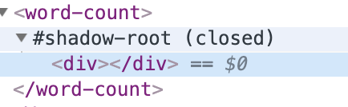

<!DOCTYPE html>
<html lang="en">
<head>
  <meta charset="UTF-8">
  <meta name="viewport" content="width=device-width, initial-scale=1.0">
  <meta http-equiv="X-UA-Compatible" content="ie=edge">
  <title>Web Components</title>
  <link rel="stylesheet" href="../../css/normalize.css">
	<link rel="stylesheet" href="../../css/styles/agate.css">
	<link rel="stylesheet" href="../../css/dark.css">
	<script src="../../js/highlight.pack.js"></script>
	<script src="../../js/index.min.js"></script>
</head>
<body>
  <aside id="sidebar">
		<section id="catalog">
			
			目录
		</section>
	</aside>
	<div id="showCatalog">
		
	</div>
	<article id="container">
		<hgroup>
			<h1 id="title">Web Components</h1>
    </hgroup>
    <section>
      <h2>基本使用</h2>
      <p>
        <ul>
          <li>Autonomous custom elements：继承 HTMLElement 类，直接作为自定义的 HTML 元素使用。</li>
          <li>Customized built-in elements：继承已有的标准 HTML 元素，比如 div、p、span 等。</li>
        </ul>
        其使用步骤为：
        <ol>
          <li>声明自定义元素的类</li>
          <li>使用 customElements.define 进行注册</li>
          <li>在 html 页面中使用自定义元素</li>
        </ol>
        <h3>Autonomous custom elements</h3>
        <pre><code class="javascript">
class AutonomousCustom extends HTMLElement {
  constructor() {
    super();
    // ...
  }
}
customElements.define('autonomous-custom', AutonomousCustom);
        </code></pre>
        <pre><code class="html">
&lt;autonomous-custom&gt;&lt;/autonomous-custom&gt;
        </code></pre>
        <h3>Customized built-in elements</h3>
        写一个继承自 div 的自定义元素，该元素将拥有 div 元素的特性。
        <pre><code class="javascript">
class CustomizedBuiltIn extends HTMLDivElement {
  constructor() {
    super();
    // ...
  }
}
customElements.define('customized-built-in', CustomizedBuiltIn, { extends: 'div' });
        </code></pre>
        <pre><code class="html">
&lt;div is="customized-built-in"&gt;&lt;/div&gt;
        </code></pre>
      </p>
    </section>
    <section>
      <h2>详细使用</h2>
      <p>
        <h3>this</h3>
        在构造函数（以及类的方法）中，this 指向该自定义元素，所以可以使用 HTML 操作方法。
        <pre><code class="javascript">
const classList = this.getAttribute('class');
this.setAttribute('style', 'text-align: center;');
const divEl = document.createElement('div');
this.appendChild(divEl);
        </code></pre>
        <h3>shadow</h3>
        自定义元素可以通过 this.attachShadow 来创建 shadowRoot，shadowRoot 是与外界 html 环境完全隔离的元素节点，拥有与一般 html 元素相同的特性。
        <pre><code class="javascript">
class MyElement extends HTMLElement {
  construcotr() {
    super();
    const shadowRoot = this.attachShadow({ mode: 'open' });
  }
}

        </code></pre>
        创建的 shadowRoot 有两种模式，由参数 mode 决定：
        <ul>
          <li>open：可以通过获得自定义元素，再通过 元素.shadowRoot 读取并操作</li>
          <li>closed：元素.shadowRoot 将得到 null</li>
        </ul>
        <figure>
          
          <figcaption>#shadow-root 是 shadowRoot，word-count 是 shadow host</figcaption>
        </figure>
        如果不进行 attachShadow，那么自定义标签就是个普通的标签。而进行 attachShadow 后，在该自定义标签内添加内容都会被忽略掉，只有 shadowRoot.appendChild （挂在 shadowRoot 下的子节点）的元素才会被浏览器渲染出来。
        <h3>shadowRoot 和 shadow host</h3>
        假如自定义元素是 $0（比如上面的 word-count 元素），那么存在以下关系：
        <pre><code class="javascript">
$0.shadowRoot.host === $0; // => true
        </code></pre>
        <h3>slot</h3>
        除了直接在 shadowRoot 上添加节点，还可以定义 slot（插槽）来实现更灵活的组件，name 表示插槽名，自定义组件内的内容可能是 template 内的内容：
        <pre><code class="html">
&lt;template id="my-template">
  &lt;slot name="title">默认标题&lt;/slot>
  &lt;p>
    &lt;slot name="content">默认内容&lt;/slot>
  &lt;/p>
  &lt;slot name="footer">默认页脚&lt;/slot>
&lt;/template>
        </code></pre>
        <pre><code class="javascript">
class MyComponent extends HTMLElement {
  constructor() {
    super();
    const templateEl = document.getElementById('my-template');
    const shadowRoot = this.attachShadow({ mode: 'open' });
    shadowRoot.appendChild(templateEl.content.cloneNode(true));
  }
}
customElements.define('my-component', MyComponent);
        </code></pre>
        使用组件的时候在元素 attribute 上添加 slot="xxx" 来往插槽插入内容，xxx 指插槽名。
        <pre><code class="html">
&lt;my-component>
  &lt;div slot="title">标题内容&lt;/div>
  &lt;div slot="content">随着经济与技术的发展，abcdefg&lt;/div>
&lt;/my-component>
        </code></pre>
      </p>
    </section>
    <section>
      <h2>生命周期回调函数</h2>
      <p>
        <h3>connectedCallback</h3>
        当自定义元素被创建、移动后触发的回调函数。
        <h3>disconnectedCallback</h3>
        当自定义元素被移除后触发的回调函数。
        <h3>adoptedCallback</h3>
        当自定义元素被移动到新的 document 中时触发的回调函数。
        <h3>attributeChangedCallback</h3>
        当自定义元素的 attribute 被修改（新增、修改、移除）时触发的回调函数。需要注意两点：
        <ul>
          <li>只有在静态方法 observedAttributes 返回的数组中定义的字段才会触发回调</li>
          <li>通过 this.xxx 无法触发回调，只有通过 this.setAttribute 之类的方式才会触发回调</li>
        </ul>
        <pre><code class="javascript">
class CallbackDemo extends HTMLElement {
  constructor() {
    super();
    console.log('constructor'); // document.createElement 时触发
  }
  connectedCallback() {
    console.log('connectedCallback'); // xxx.appendChild 时触发
  }
  disconnectedCallback() {
    console.log('disconnectedCallback'); // xxx.removeChild 时触发
  }
  adoptedCallback() {
    console.log('adoptedCallback');
  }
  attributeChangedCallback(name, oldValue, newValue) {
    console.log('attributeChangedCallback'); // this.setAttribute 时触发
  }
  static get observedAttributes() {
    return [];
  }
}
        </code></pre>
      </p>
    </section>
    <section class="refer">
      <h2>参考文献</h2>
      <p>
        <div>[1] MDN Using_custom_elements <a href="https://developer.mozilla.org/en-US/docs/Web/Web_Components/Using_custom_elements">https://developer.mozilla.org/en-US/docs/Web/Web_Components/Using_custom_elements</a></div>
      </p>
    </section>
  </article>
</body>
</html>